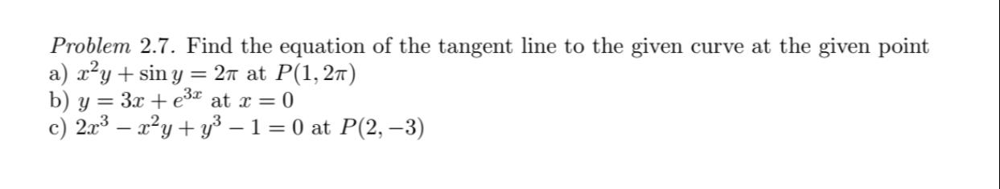
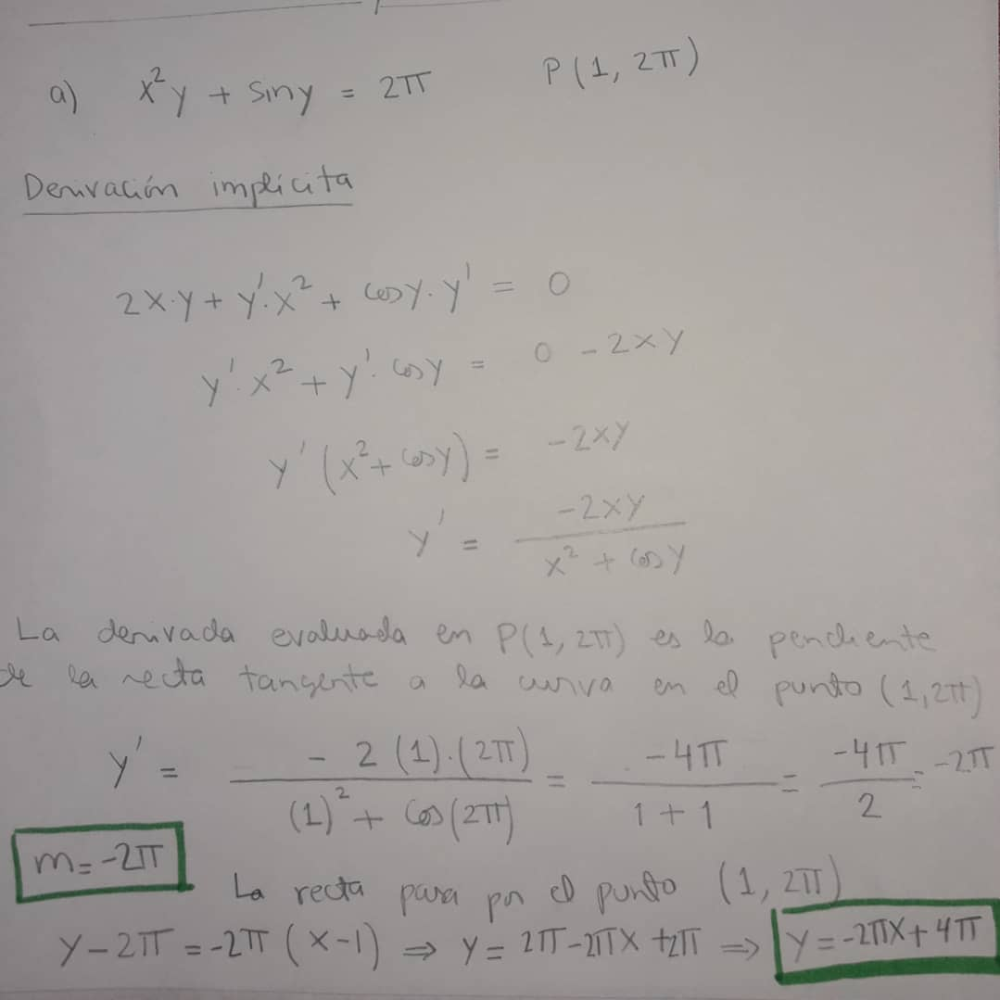

Indice
Pregunta 3

Respuesta 3

Pistas
Debo encontrar y' como no puedo despejar "y" uso derivacion implicita
Despejo y' y evalúo en el punto para hallar la pendiente m
Con la pendiente y un punto, escribo la ecuación de la recta
Indice